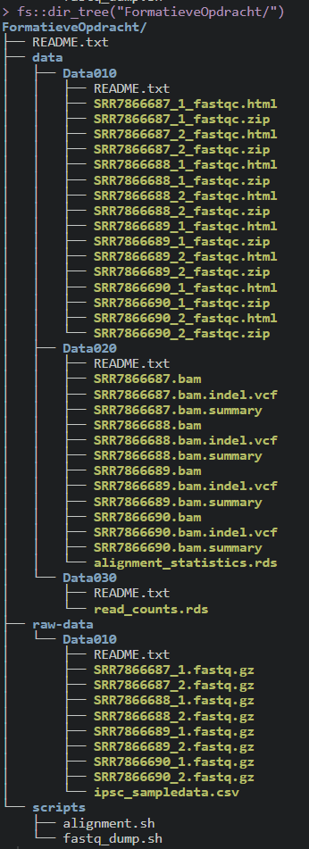
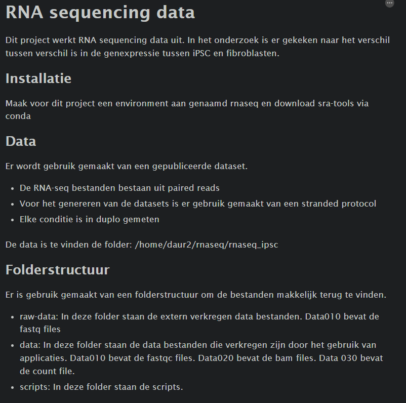

Chapter 5 Data management deel 1
Tijdens de cursus Data Science for Biology 1 die bij de minor Data Science hoort is er een RNA-Sequencing analyse uitgevoerd. De data van die analyse is in dit gedeetle gestructueerd volgens de Guerilla Analytics regels voor data management (source). Dit is weergeven in een afbeelding waarin de folder structuur te zien is en een bijbehorend README bestand met informatie over de analyse.
De afbeelding van de folder directory is gemaakt met de fs package.

Figure 5.1: fig x: Folder tree cursus dsfb1
In de folder structuur is te zien dat er meerdere README bestanden aanwezig zijn. Er is een algemeen README bestand en README bestanden voor de datasets. In de onderstande foto is het algemene README bestand te zien.

Figure 5.2: Daur2 README